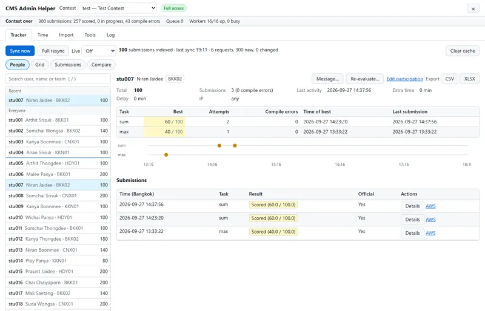

CMS Admin Helper

EXHIBIT · images/CmsAdminHelper.webp1. SUMMARY
A Chrome and Firefox extension that adds the contest-day tools the CMS v1.5 admin is missing: a contestant tracker, bulk import from Excel or Google Sheets, and Bangkok-time scheduling — without touching the CMS server.
2. LOAD TEST RECORD
Tested on AWS with 2,000 submissions and a 300-user import: median 171 ms, p95 under 650 ms.
3. FULL NOTES
Why I built it
CMS, the contest system the IOI runs on, is what Kit2Code uses for onsite contests. Its admin has no contestant tracker, no bulk import and no Bangkok-time scheduling, which are the things an organiser needs on the day. Contestants had to be added to CMS one at a time, by hand. It was also hard to track contestants who cheated by using AI.
What it had to do
- The CMS server must stay unmodified.
- It runs as a browser extension, for Chrome and Firefox.
What I chose
- Drive the admin's own forms. The extension drives the forms CMS already has, instead of patching CMS, so the server needs no changes.
- Bulk import from Excel or Google Sheets.
- Bangkok-time scheduling.
How it went
I load-tested it on AWS with 2,000 submissions and a 300-user import: median 171 ms, p95 under 650 ms.
Next
A customizable scoreboard that syncs through the extension, so the host no longer has to set up a scoreboard themselves.